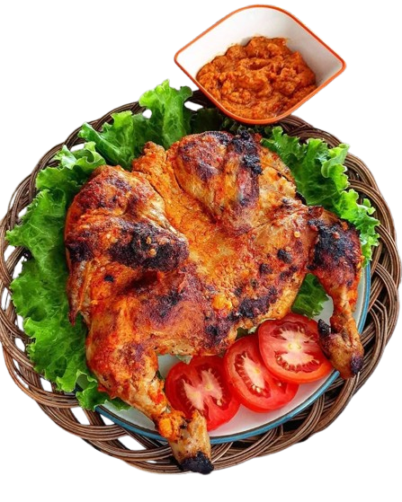

Makanan dan MinumanTradisional
Khas Indonesia

Makanan dan minuman tradisional khas Indonesia adalah hidangan yang berasal dari berbagai daerah di Indonesia, dibuat dengan resep turun-temurun, menggunakan bahan-bahan lokal, dan mencerminkan budaya serta kearifan lokal masing-masing daerah. Indonesia sangat kaya akan makanan dan minuman tradisional karena terdiri dari banyak suku, adat, dan pulau.
Masakan Indonesia menawarkan cita rasa yang kaya, beragam, dan autentik. Dengan ratusan suku bangsa dan budaya, setiap daerah memiliki keunikan dalam racikan bumbu dan cara memasak. Rempah-rempah lokal seperti kunyit, serai, lengkuas, dan kemiri memberikan aroma dan rasa yang khas, sulit ditemukan di masakan negara lain. Selain itu, masakan Indonesia sangat fleksibel — cocok untuk semua selera, dari yang menyukai pedas, manis, gurih, hingga asam. Mengonsumsi masakan Indonesia juga berarti mendukung petani lokal dan menjaga warisan kuliner nusantara tetap hidup di tengah modernisasi.


Memberikan identitas dari makanan yang ditampilkan. Contoh: Rendang – Masakan khas Minangkabau yang kaya rempah.
Pesan SekarangMenyebutkan daerah asal atau latar budaya dari makanan tersebut Khas dari Padang, Sumatera Barat dll
Pesan SekarangPenjelasan tentang rasa, bahan utama, atau keunikan makanan. Contoh: Terbuat dari daging sapi yang dimasak dengan santan dan rempah selama berjam-jam hingga empuk dan kering.
Pesan SekarangMakanan Kami Sangatlah Enak Untuk diHidangkan dan Untuk Harga Terjangkau.Informasi tentang bagaimana makanan biasanya disajikan atau dinikmati. Contoh: Disajikan dengan nasi putih hangat dan daun singkong.
Pesan SekarangMenyebutkan bahan dasar pembuatannya. Contoh: Daging sapi, santan, kentang, dan bumbu rempah
Pesan SekarangMenambah daya tarik dengan cerita di balik makanan atau fakta menarik. Contoh: Rendang pernah dinobatkan sebagai makanan terenak di dunia oleh CNN.
Pesan SekarangTerima kasih. Pembelian Anda sangat berarti untuk kami. Selamat menikmati.
Kami berharap Anda senang dengan pembelian Anda. Terima kasih sudah menjadi pelanggan setia kami.
Kepercayaan Anda pada kami sangat kami hormati. Kami bersyukur memiliki customer setia seperti Anda. Melayani Anda adalah aset terbesar kami.
Kepercayaan Anda pada kami sangat kami hormati. Kami bersyukur memiliki customer setia seperti Anda. Melayani Anda adalah aset terbesar kami.
Juru masak adalah pekerja atau tukang masak profesional yang terlatih dan mahir dalam semua aspek penyiapan makanan.
Juru masak adalah pekerja atau tukang masak profesional yang terlatih dan mahir dalam semua aspek penyiapan makanan.

Juru masak adalah pekerja atau tukang masak profesional yang terlatih dan mahir dalam semua aspek penyiapan makanan.
Juru masak adalah pekerja atau tukang masak profesional yang terlatih dan mahir dalam semua aspek penyiapan makanan.